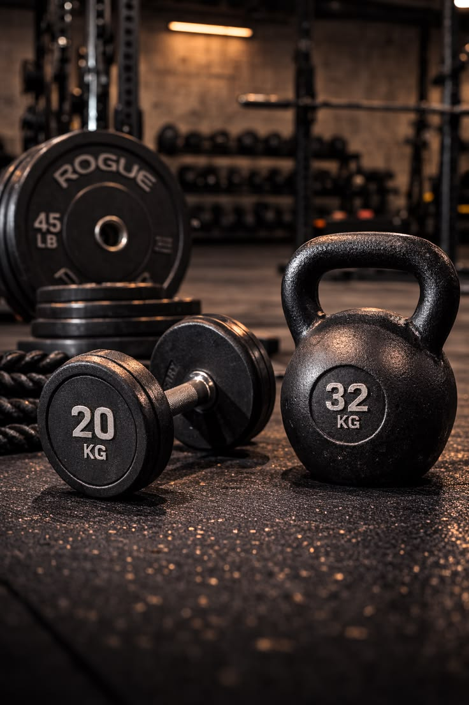

<!-- Gallery Section -->
<section class="py-20 bg-gradient-to-b from-[#0d0d0d] via-[#111] to-[#0b0b0b] text-white">

  <div class="max-w-6xl mx-auto px-6 text-center">
    <h2 class="text-4xl font-extrabold mb-4">Client Progress & Training Moments</h2>

    <p class="text-gray-400 max-w-xl mx-auto mb-12 text-sm md:text-base">
      Real transformations, real dedication. Explore training sessions, meal prep ideas, and client progress.
    </p>

    <div class="grid grid-cols-1 sm:grid-cols-2 md:grid-cols-3 gap-6">

      <!-- Image 1 -->
      <div class="overflow-hidden rounded-xl">
        
      </div>

      <!-- Image 2 -->
      <div class="overflow-hidden rounded-xl">
        
      </div>

      <!-- Image 3 -->
      <div class="overflow-hidden rounded-xl">
        
      </div>

      <!-- Image 4 -->
      <div class="overflow-hidden rounded-xl">
        
      </div>

      <!-- Image 5 -->
      <div class="overflow-hidden rounded-xl">
        
      </div>

      <!-- Image 6 -->
      <div class="overflow-hidden rounded-xl">
        
      </div>

    </div>
  </div>
</section>
